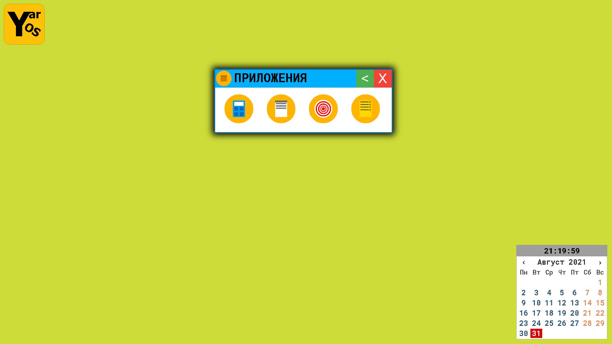
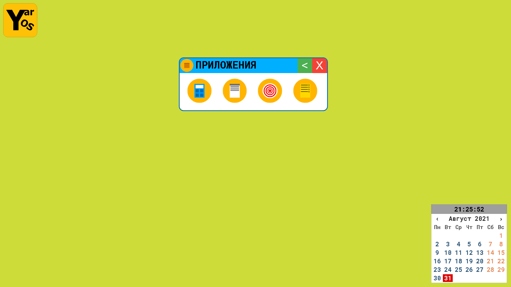
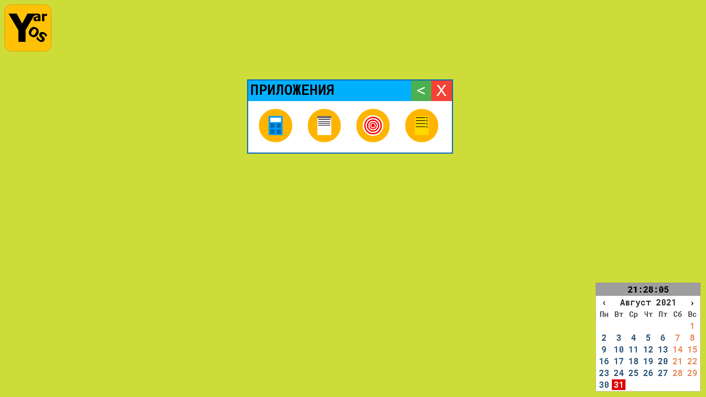

С этим обновлением мы обновили настройки добавив в них такие функцие:
Тени у окон: у окон появляються тени.
Скриншот действия настройки тени у окон на окне.
Загругление окон: у окон появляеться закругление.
Скриншот действия настройки закругление окна на окне.
Иконки окон: у окон появляеться мини иконки слева.
Скриншот выключенной настройке иконки окон на окне (Настройка иконки окон установлена по умолчанию).
На превидущий пост На следущий пост